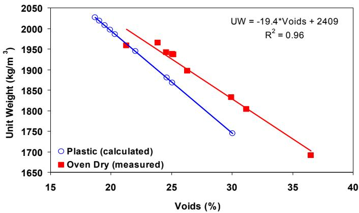
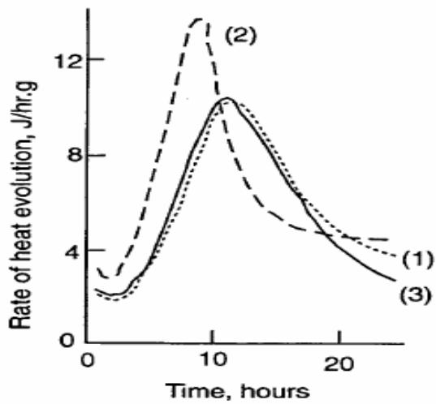
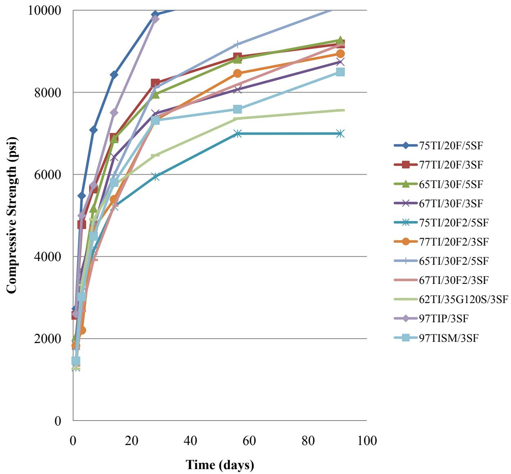
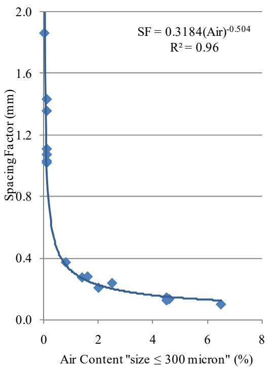
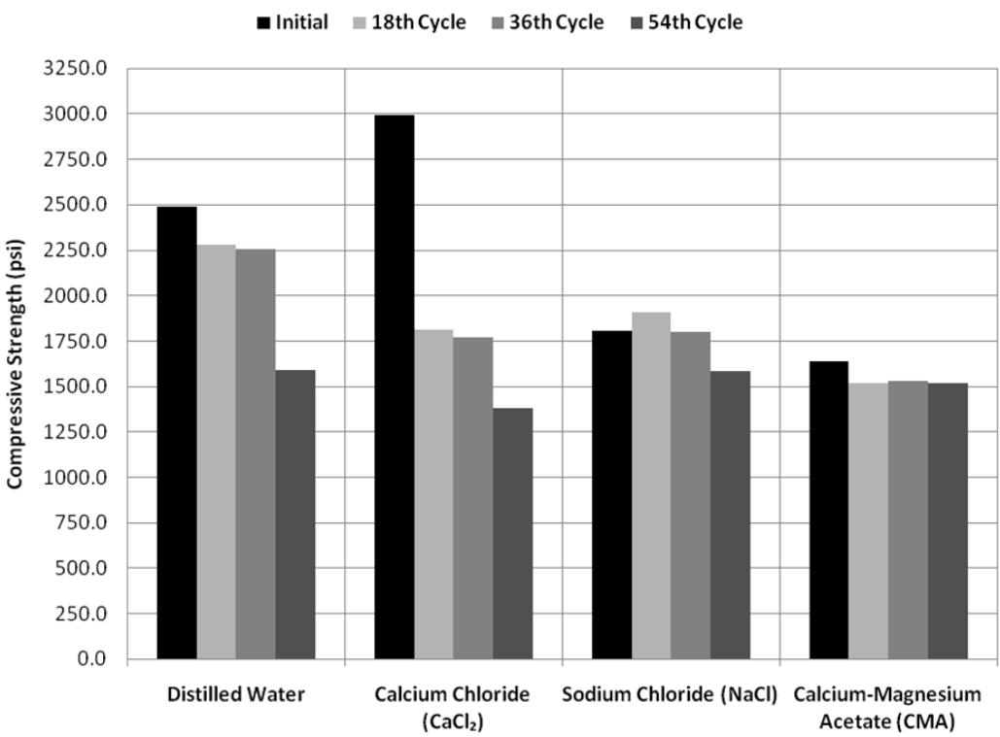
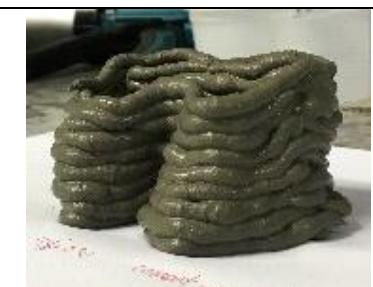

Silica Fume
Silica fume is a supplementary cementitious material classified as a pozzolan because it behaves as such when mixed with calcium hydroxide or portland cement [1]. A pozzolan is defined as a siliceous or siliceous and aluminous material that chemically reacts with calcium hydroxide in the presence of moisture to form compounds having cementitious properties [2]. Consequently, silica fume possesses these pozzolanic properties, allowing it to react with calcium hydroxide to form additional cementitious compounds. It is a by-product from the production of silicon or ferrosilicon metal, collected in bag houses exiting submerged-arc electric furnaces, and is almost entirely composed of sub-micron sized particles of amorphous silica [1].
Sources (18)
Production and Industry Standards
- ~75,000 to 100,000 tons produced annually in the US and Canada (heavily dependent on silicon metal demand and furnace operations)
- Production rarely meets demand
- Standard: ASTM C 1240 and CSA specifications require bulk SiO₂ ≥ 85%
- “Non-spec” materials (alloys not meeting 85% SiO₂) remain controversial
Physical and Chemical Properties
Characterized by a sub-micron particle size, silica fume possesses an extremely high surface area. These particles are approximately 100 times smaller than typical portland cement particles, resulting in a high surface area-to-volume ratio that drives its rapid pozzolanic reactivity [2]; consequently, it behaves as a pozzolan when mixed with calcium hydroxide or portland cement. Available in both powder and slurry forms, durability testing indicates no significant difference in performance between the two physical states [3]. Laboratory testing protocols for silica fume often include X-ray diffraction and thermal analysis to determine mineral composition, alongside bulk chemical and physical testing per ASTM or AASHTO specifications [1]. Through X-ray diffraction analysis, the presence of trace silicon carbide (SiC) can be identified in silica fume samples [1], though portable X-ray fluorescence (XRF) analysis is complicated by the material’s heterogeneity and small particle size, which can lead to significant analytical inaccuracies if samples are not properly homogenized [4]. In concrete containing gravel aggregate, increasing silica fume content from 0% to 5% improves both absorption and air permeability, though no scaling trend is observed as a function of silica fume dosage [5].
 X-ray diffactogram of silica fume (note the trace of SiC in the sample) [1]
X-ray diffactogram of silica fume (note the trace of SiC in the sample) [1]
Regarding pervious concrete, unit weight decreases linearly as the void ratio increases [6], while permeability increases exponentially as the void ratio rises, with a rapid increase occurring at void ratios greater than 25% [6].

Relationship between voids and unit weight of pervious concrete samples made with gyratory compaction [6]Hydration Kinetics and Microstructure
Isothermal calorimetry is employed to study the hydration kinetics of silica fume blends, with research establishing a direct relationship between blended cement reactivity and curing temperatures across ranges from 10°C to 55°C [7]. While three-dimensional numerical models for cement hydration can predict microstructure development in mixes containing silica fume, they require two-dimensional SEM or X-ray images alongside particle size distribution data to establish accurate representations [7]. Due to its high reactivity, silica fume accelerates cement hydration and fills fine gaps within the cementitious matrix, contributing to increased segregation resistivity and early strength in printable concrete [8]. Furthermore, silica fume acts as nucleation sites for hydration products like C-S-H and CH, accelerating cement hydration and increasing early-age heat development [2]. This high reactivity allows it to rapidly consume calcium hydroxide (CH) and produce C-S-H gel, which is responsible for the significant increase in ultimate concrete strength [2]. Consequently, silica fume increases both early- and later-age strength by affecting cement hydration immediately, whereas materials like Class F fly ash decrease early strength [9].

Heat evaluation at 2 0 ° C (1) 40% coarse slag (400 m2/Kg) (2) 40% fine slag (592 m2/Kg) (3) OPC (adapted from Uchikawa 1986) [7]The addition of silica fume reduces both pore size and porosity in concrete, thereby increasing strength alongside other supplementary cementitious materials [9]. Its presence also reduces the interfacial transition zone (ITZ), which is a critical factor influencing concrete distress mechanisms [5]. In ternary systems containing both fly ash and silica fume, the inclusion of silica fume significantly reduces oxygen permeability at later ages compared to fly ash alone [3]. When employed as part of a ternary mixture with other supplementary cementitious materials, silica fume helps minimize high volumes of any single SCM while allowing flexibility to vary total content to meet project requirements [10]. Regarding setting times, for a 3% replacement of the TISM cement the final setting time decreased 29 minutes and for a 62TI/35G120S/3SF, the final setting time decreased 82 minutes [11].

ASTM C39 concrete compressive strengths of mixtures containing silica fume [11]Mechanical Strength and Durability Benefits
Silica fume is identified as a practical supplementary cementitious material for mitigating alkali-silica reactivity (ASR) in concrete containing reactive aggregates like chert, often used within ternary mixtures to provide higher mitigation without the risks associated with high volumes of a single SCM [10]. Due to its pozzolanic activity, silica fume concrete demonstrates the greatest reduction in chloride penetration depth among common supplementary cementitious materials, outperforming both GGBFS and fly ash [3]. Unlike fly ash or GGBFS which typically reduce early-age strength, silica fume increases compressive strength at all ages [3], and concrete containing silica fume develops strength at a faster rate than plain portland cement concrete, eliminating the typical trade-off between low early-age and high ultimate strength seen with fly ash [2]. Furthermore, silica fume concrete exhibits increased compressive strength at any given time over portland cement concrete for the same water-to-binder ratio [2]. The addition of silica fume can also produce smaller pore sizes in which water cannot freeze at ordinary ambient temperatures, potentially eliminating the need for air entrainment in low w/b concrete [12]. In the Schlorholtz & Hooton (2008) field study, the only site that exceeded the 1.5 lb/yd² scaling mass loss threshold was Site 13 (Taconic State Parkway bridge, NY), which used a ternary mixture of portland cement, 20% slag, and 6% silica fume; notably, core extraction from silica fume bridge decks was noted as unusually difficult, as decks containing silica fume were “difficult to snap cores out of.” Silica fume was also used in Connecticut bridge deck #1863 (20% slag + 5% silica fume) and New York Route 378 (20% slag + 6% silica fume), both of which exhibited scaling and/or abrasion [13].

Spacing factor vs. content of small air voids [12]Regarding pervious concrete, the splitting tensile strength is approximately 12% of its compressive strength [6]. Strength in these mixes is influenced by several factors: higher compaction energy results in stronger pervious concrete mixes at given void ratios compared to lower compaction energies, and pervious concrete made with aggregates possessing higher abrasion resistance results in higher-strength concrete [6]. Additionally, mixes containing only sand yield a greater increase in strength compared to mixes that contain both sand and latex [6]. Finally, limestone mixes in pervious concrete with unit weights less than 125 pcf can be freeze-thaw resistant [6].
Regarding silica fume, ASTM C1240 silica fume can effectively mitigate alkali-silica reaction in ternary blends when used at cement replacement levels between 3% and 7%, whereas its use in binary mixtures is not recommended for exposed applications [11].
Regarding freeze-thaw resistance, silica fume can produce pore sizes small enough that water cannot freeze at ordinary ambient temperatures, potentially eliminating the need for air entrainment in low water-to-binder ratio concrete [12].
 Durability factor as a function of spacing factor, measured using the RapidAir [12]
Durability factor as a function of spacing factor, measured using the RapidAir [12]
Mix Design and Dosage Guidelines
Silica fume can be used as a fine aggregate replacement in concrete mixes, such as substituting river sand in ternary mixtures containing slag cement and fly ash [4]. When used in combination with other supplementary cementitious materials, silica fume requires specific mix optimization to ensure performance, as different SCMs may not impart identical benefits simultaneously [1]. Research indicates that for concrete containing 6% silica fume with Type I cement and dolomitic limestone, the limiting w/b ratio below which air entrainment is not required for good frost-thaw durability is approximately 0.25 [12]. In a study where mixtures contained either 3 or 5% silica fume, only 3 of the 27 mixtures tested that contained silica fume had expansions >0.10%, and all 3 of these mixtures contained Class C fly ash [11].
 ASTM C1567 ASR expansion for mixtures containing Type IP(6) cement [11]
ASTM C1567 ASR expansion for mixtures containing Type IP(6) cement [11]
As the most expensive SCM, silica fume’s use is limited by its cost, which limits widespread use. The typical dosage range for silica fume in high-performance concrete is 3% to 8% of total cementitious materials, involving 5% to 15% cement replacement, while pavement concrete commonly uses 3% to 5%, involving 4% to 10% cement replacement [3]. Additionally, larger aggregate sizes, such as 1/2 inch river gravel compared to No. 4 or 3/8 inch sizes, produce pervious concrete mixes with higher void ratios [6].
Challenges in Concrete Workability
Due to its extreme fineness and high surface area, silica fume increases the water requirement and stickiness of a concrete mixture, which contrasts with other supplementary cementitious materials that generally improve workability [9]. This characteristic significantly increases water demand, necessitating the use of high-range water reducers (superplasticizers) to achieve workable concrete without increasing the water-to-binder ratio [2]. Additionally, carbon particles in the material may cause air-entrainment issues.
 Dispersing action of water-reducing agents a) flocculated paste and b) dispersed paste [9]
Dispersing action of water-reducing agents a) flocculated paste and b) dispersed paste [9]
In the first hours, silica fume reduces the mobility of the concrete by attracting water to its large surface area; however, during these initial hours, it does not take part in the strengthening reaction [11].
Silica fume’s high surface area requires high-range water reducers and can cause air-entrainment issues [14].
Performance in Pervious Concrete
In pervious concrete applications, silica fume is utilized alongside other cementitious materials to form a film around uniformly graded aggregates (typically between 1/2 inch and No. 4 sieve sizes), which connects the particles together to enhance strength and durability despite the material’s inherent porosity [15]. When incorporated into pervious concrete mixes that require extreme care to prevent premature drying due to low water/cement ratios, silica fume contributes to the formation of a bonding film around aggregates while admixtures such as retarders are employed to delay hydration and ensure sufficient placement time [15]. However, in pervious concrete applications, silica fume acts counterproductively by increasing void ratios and decreasing compressive strength compared to mixes without it [16]. Specifically, when used as a 5% cement replacement in pervious concrete, silica fume can reduce seven-day compressive strength by up to 44% while simultaneously increasing the mix’s void ratio [16]. This detrimental effect is attributed to an increase in the mix’s overall void ratio caused by the material [16], and in pervious concrete mixes containing silica fume, higher void ratios and lower compressive strengths are observed compared to mixes without it, as the material increases overall porosity [6].

Compressive strength of nonlatex pervious concrete [6]Furthermore, in pervious concrete, compressive strength decreases linearly as the void ratio increases [6], whereas pervious concrete mixes with void ratios between 15% and 19% typically achieve seven-day compressive strengths ranging from 2,900 psi to 3,300 psi [6]. Ultimately, in pervious concrete, silica fume is generally ineffective at improving strength due to significant difficulties in dispersing the material within the mix [17].
 Relationship between pervious concrete void ratio, permeability, and seven-day compressive strength for all mixes placed using regular compaction energy [6]
Relationship between pervious concrete void ratio, permeability, and seven-day compressive strength for all mixes placed using regular compaction energy [6]
Specialized Applications
Silica fume is utilized in high-durability pavement mix designs that incorporate the largest practical top-size coarse aggregate (e.g., 50.0 mm or 2 inches) to enhance strength characteristics and improve aggregate interlock across pavement crack interfaces [18]. Additionally, pervious concrete generally produces noise levels 3% to 10% lower than those of normal concrete [6].
In the context of 3D printing concrete, silica fume increases yield stress and viscosity by forming flocculation structures due to its large surface area, which enhances buildability but reduces flowability [8]. To achieve optimal extrudability and shape-holding ability, a specific mix design for 3D printing mortar utilizes a binder containing 2.5% silica fume by weight of the total binder [8].

C97.5-SF2.5-V0.5-SP1.0 [8]Silica fume increases the yield stress and viscosity of 3D printable concrete due to its large surface area causing high water absorption and flocculation structures, yet it improves segregation resistivity and early strength by accelerating cement hydration and filling fine gaps in the matrix [8].
Related
- Supplementary Cementitious Materials
- Pozzolanic Reaction
- Ternary Mixture
- Deicing Salt Effects
- Ground Granulated Blast-Furnace Slag
References
- S. Schlorholtz, "Development of Performance Properties of Ternary Mixes: Scoping Study (Phase 1)," Center for Portland Cement Concrete Pavement Technology, Iowa State University, Ames, IA, Rep. DTFH61-01-X-00042 (Project 13), 2004. [Online]. Available: https://www.cptechcenter.org/wp-content/uploads/2018/03/ternary_mixes.pdf
- B. Shafei, P. Taylor, B. Phares, and M. Kazemian, "Fiber-Reinforced Concrete for Bridge Decks," Bridge Engineering Center, Iowa State University, Ames, IA, Rep. TR-767, 2021. [Online]. Available: https://www.intrans.iastate.edu/wp-content/uploads/2021/12/fiber-reinforced_concrete_in_bridge_decks_w_cvr.pdf
- P. Tikalsky, V. Schaefer, K. Wang, B. Scheetz, T. Rupnow, A. St. Clair, M. Siddiqi, and S. Marquez, "Development of Performance Properties of Ternary Mixes, Phase 1," Center for Transportation Research and Education, Ames, IA, Rep. TPF-5(117), 2007. [Online]. Available: https://www.intrans.iastate.edu/research/completed/development-of-performance-properties-of-ternary-mixes-phase-1/
- P. C. Taylor, E. Yurdakul, and H. Ceylan, "Concrete Pavement MDA: Application of a Portable X-Ray Fluorescence Technique to Assess Concrete Mix Proportions," National Concrete Pavement Technology Center, Ames, IA, Rep. TPF-5(205), 2012. [Online]. Available: https://www.intrans.iastate.edu/research/completed/concrete-pavement-mixture-design-and-analysis/
- P. Taylor, L. Sutter, and J. Weiss, "Investigation of Deterioration of Joints in Concrete Pavements," National Concrete Pavement Technology Center, Ames, IA, Rep. TPF-5(224), 2012. [Online]. Available: https://www.intrans.iastate.edu/wp-content/uploads/2018/03/joint_deterioration_penetrating_sealers_field_study_w_cvr.pdf
- V. R. Schaefer and J. T. Kevern, "An Integrated Study of Pervious Concrete Mixture Design for Wearing Course Applications," National Concrete Pavement Technology Center, Ames, IA, 2011. [Online]. Available: https://www.intrans.iastate.edu/wp-content/uploads/2018/03/pervious_overlay_report_w_cvr.pdf
- K. Wang, Z. Ge, J. Grove, J. M. Ruiz, and R. Rasmussen, "Developing a Simple and Rapid Test for Monitoring the Heat Evolution of Concrete Mixtures (Phase 3)," CTRE, Iowa State University, Ames, IA, Rep. FHWA Project 17 (Phase I), 2006. [Online]. Available: https://www.intrans.iastate.edu/wp-content/uploads/2018/03/CalorimeterReportPhaseIII.pdf
- K. Wang, K. Wi, S. Laflamme, S. Sritharan, P. Taylor, and H. Qin, "Feasibility Study of 3D Printing of Concrete for Transportation Infrastructure," Institute for Transportation, Iowa State University, Ames, IA, Rep. TR-756, 2020. [Online]. Available: https://intrans.iastate.edu/app/uploads/2020/10/concrete_transportation_infrastructure_3D_printing_feasibility_w_cvr.pdf
- P. Taylor, F. Bektas, E. Yurdakul, and H. Ceylan, "Optimizing Cementitious Content in Concrete Mixtures for Required Performance," National Concrete Pavement Technology Center, Ames, IA, 2012. [Online]. Available: https://www.intrans.iastate.edu/wp-content/uploads/2018/03/taylor_ocm_w_cvr2.pdf
- J. Grove, F. Bektas, and H. Gieselman, "Southeast Michigan Local Road Concrete Pavement Durability Study," National Concrete Pavement Technology Center, Ames, IA, 2006. [Online]. Available: https://www.cptechcenter.org/wp-content/uploads/2018/03/mi_pavement_durability.pdf
- P. Tikalsky, P. Taylor, S. Hanson, and P. Ghosh, "Development of Performance Properties of Ternary Mixtures: Laboratory Study on Concrete," National Concrete Pavement Technology Center, Ames, IA, Rep. TPF-5(117), 2011. [Online]. Available: https://www.intrans.iastate.edu/research/completed/development-of-performance-properties-of-ternary-mixtures-laboratory-study-on-concrete/
- K. Wang, G. Lomboy, and R. Steffes, "Investigation into Freezing-Thawing Durability of Low-Permeability Concrete with and without Air Entraining Agent," National Concrete Pavement Technology Center, Ames, IA, 2009. [Online]. Available: https://www.intrans.iastate.edu/wp-content/uploads/2018/03/low-permeability-concrete.pdf
- S. Schlorholtz and R. D. Hooton, "Deicer Scaling Resistance ... Containing Slag Cement, Phase 1: Site Selection and Analysis of Field Cores," National Concrete Pavement Technology Center, Ames, IA, Rep. TPF-5(100), 2008. [Online]. Available: https://www.cptechcenter.org/wp-content/uploads/2018/03/schlorholtz_deicing_phase1.pdf
- S. Schlorholtz, K. Wang, J. Hu, and S. Zhang, "Materials and Mix Optimization Procedures for PCC Pavements," CTRE, Iowa State University, Ames, IA, Rep. TR-484, 2006. [Online]. Available: https://www.intrans.iastate.edu/wp-content/uploads/2018/03/mco-final.pdf
- E. T. Cackler, T. Ferragut, and D. S. Harrington, "Evaluation of U.S. and European Concrete Pavement Noise Reduction Methods," National Concrete Pavement Technology Center, Iowa State University, Ames, IA, Rep. FHWA Project 15 (DTFH61-01-X-00042), 2006. [Online]. Available: https://www.cptechcenter.org/wp-content/uploads/2018/03/surface_characteristics_i.pdf
- V. R. Schaefer, K. Wang, M. T. Suleiman, and J. T. Kevern, "Mix Design Development for Pervious Concrete in Cold Weather Climates," CTRE, Iowa State University, Ames, IA, 2006. [Online]. Available: https://www.perviouspavement.org/downloads/Iowa.pdf
- S. K. Ong, K. Wang, Y. Ling, and G. Shi, "Pervious Concrete Physical Characteristics and Effectiveness in Stormwater Pollution Reduction," Institute for Transportation, Ames, IA, Rep. DTRT13-G-UTC37, 2016. [Online]. Available: https://www.intrans.iastate.edu/wp-content/uploads/2018/03/pervious_concrete_in_stormwater_pollution_reduction_w_cvr.pdf
- J. Grove, G. Fick, T. Rupnow, and F. Bektas, "Material and Construction Optimization for Prevention of Premature Pavement Distress in PCC Pavements," National Concrete Pavement Technology Center, Ames, IA, Rep. TPF-5(066), 2008. [Online]. Available: https://www.intrans.iastate.edu/wp-content/uploads/2018/03/mco-final.pdf
Feedback on this page